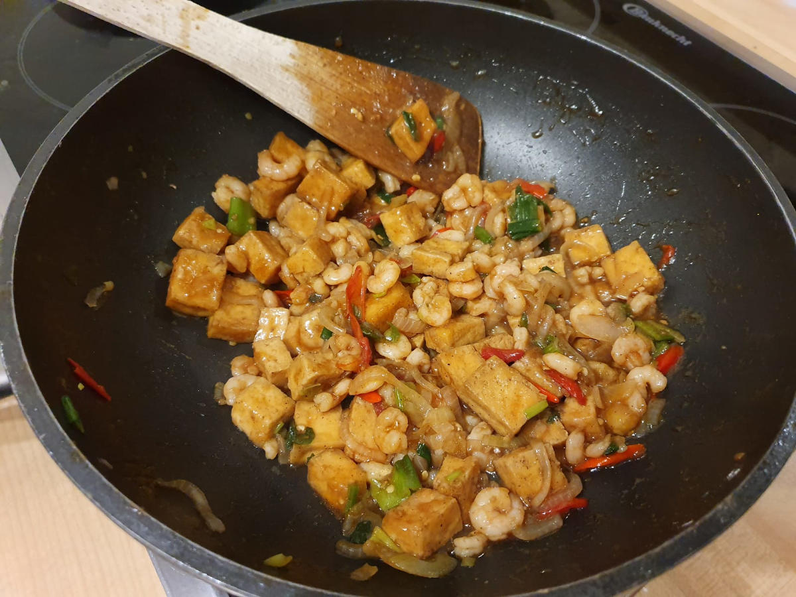
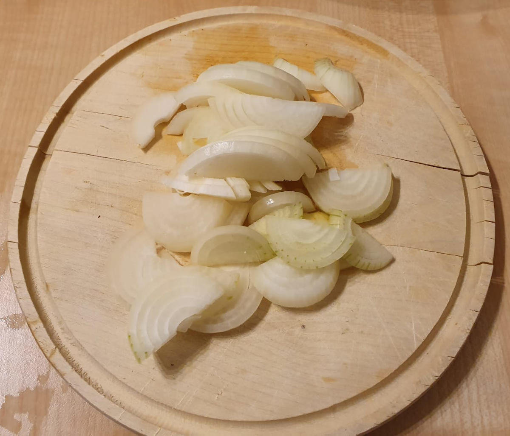
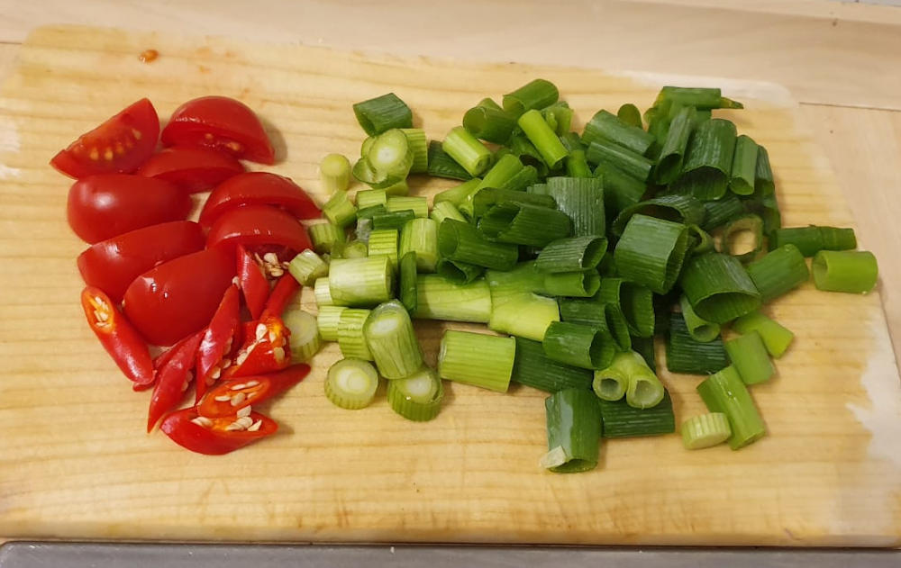
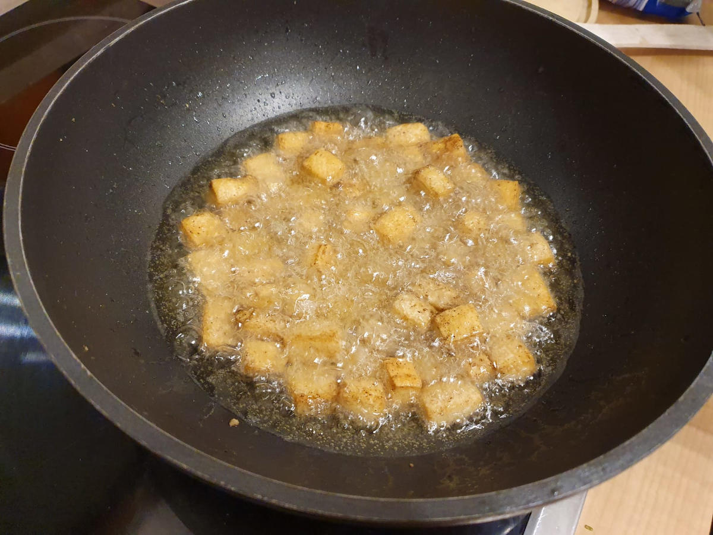
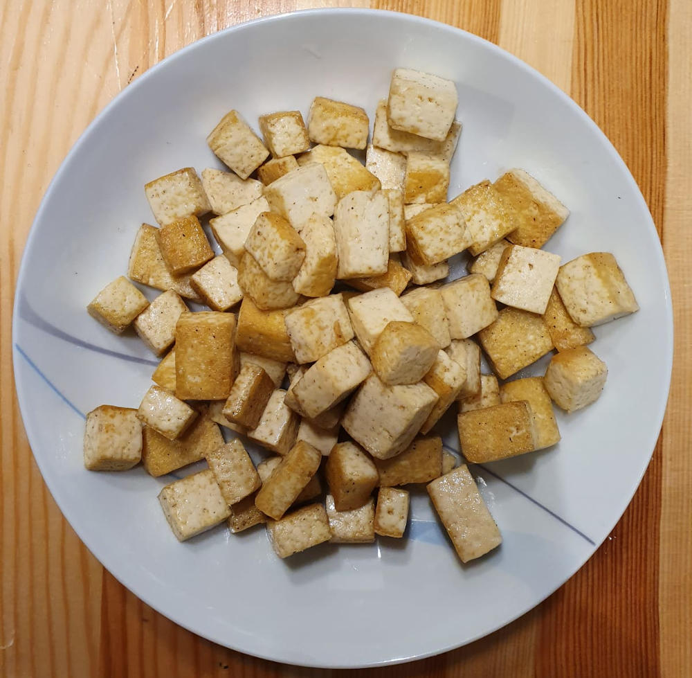
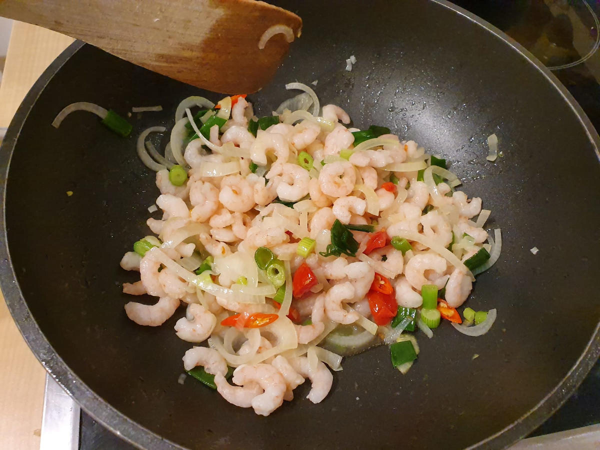

A nice dish which takes about 30 minutes to cook.
{kind=link}

Ingredients
- Shrimps (prawns are also fine)
- Tofu
- 3 spring onions
- 2 small chili peppers
- 1 big onion (or two small ones)
- Garlic powder
- Salt
- Pepper
- Oyster sauce
- Optional: Kecap Manis
- Optional: 3 small tomatoes
Tools
- Kitchen Stove with one hotplate
- Wok
- Cutting Board
- Knife
Preparation
- Cut onions, spring onions and tomatoes. Cut the chili peppers slightly diagonally.
{kind=link}

{kind=link}

- Cut Tofu into cubes of edge length 1.5 cm - something that is comfortable to eat.
- Marinate the tofu with salt, pepper and garlic powder. Let it rest for 10 minutes.
- Put oil into the wok and fry the tofu in it. Take the tofu out after it is fried.
{kind=link}

{kind=link}

- Fry the onions until they smell good. Add chili peppers and spring onions.
- Add tomatoes if you want.
- Add shrimps. They are ready when they have a nice pink color.
- Add oyster sauce and kecap manis. If you want a thicker sauce, add a teaspoon of wheat flour.
{kind=link}
